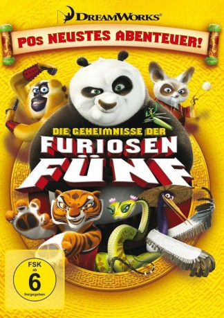

#642 Das Kung Fu Panda - Geheimnis der furiosen Fünf
Alternativ: Kung Fu Panda: Secrets of the Furious Five
 
 IMDB-Wertung: 7.2 / 10
IMDB-Wertung: 7.2 / 10  Metascore: 0
Metascore: 0 
Skadoosh!! Hier kommt die Weltpremiere von Pos neuem Abenteuer – von den Machern von Kung Fu Panda. Er hat zwar den grausamen Tai Lung besiegt, aber unser Drachenkrieger (Hape Kerkeling) muss sich nun Meister Shifus größter Herausforderung stellen. Natürlich mit der Hilfe seiner Freunde Viper, Tigress, Monkey, Crane und Mantis. "Das Geheimnis der furiosen Fünf" wird endlich gelüftet und wir erfahren, dass es mehr als schnelle Füße und Fäuste braucht, um ein Kung-Fu-Meister zu werden.
Jahr: 2008
Dauer: 25 Minuten
FSK:
Land: USA Studio: DreamWorks Home EntertainmentTonspuren:
Untertitel:
Auflösung: SD (608x336) Größe: 299 MB
Genre: Animation/Trick, Kurzfilm, Action, Komödie, Familie
Regisseur: Raman Hui
Drehbuch: Paul McEvoy, Todd Berger, Jed Diffenderfer
Soundtrack: Henry Jackman, John Powell, Hans Zimmer
Darsteller:
Datei: X:\Kinder Collections\Kung Fu Panda\Kung Fu Panda - Geheimnis der furiosen Fünf, Das (2008, FSK, 608x336).avi seit 12.03.2015
Festplatte: Kinder-Filme+Trick
 Es gibt insgesamt 10 Filme in der Gruppe 'Kinder Collections\Kung Fu Panda'
Es gibt insgesamt 10 Filme in der Gruppe 'Kinder Collections\Kung Fu Panda'